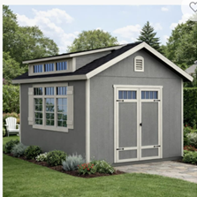

Professional Tasker's
Your trusted partner for home services
Your trusted partner for home services

We assemble outdoor sheds and storage units professionally and carefully. Whether you purchased a resin, metal, or wooden shed, we can help set it up properly.